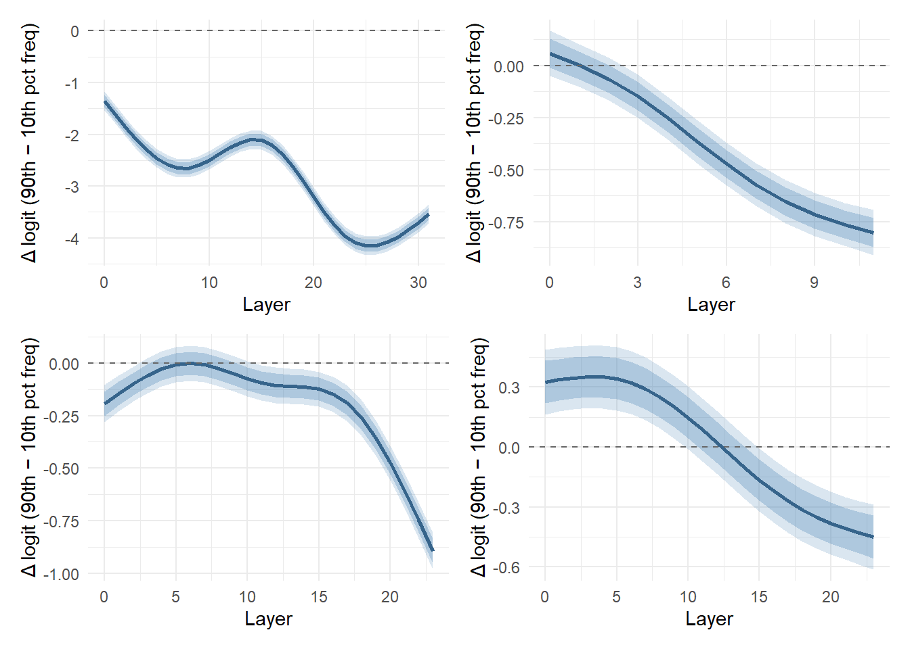
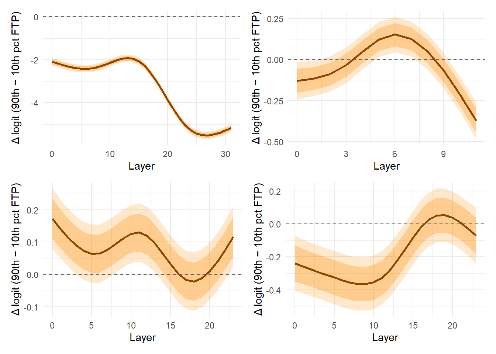
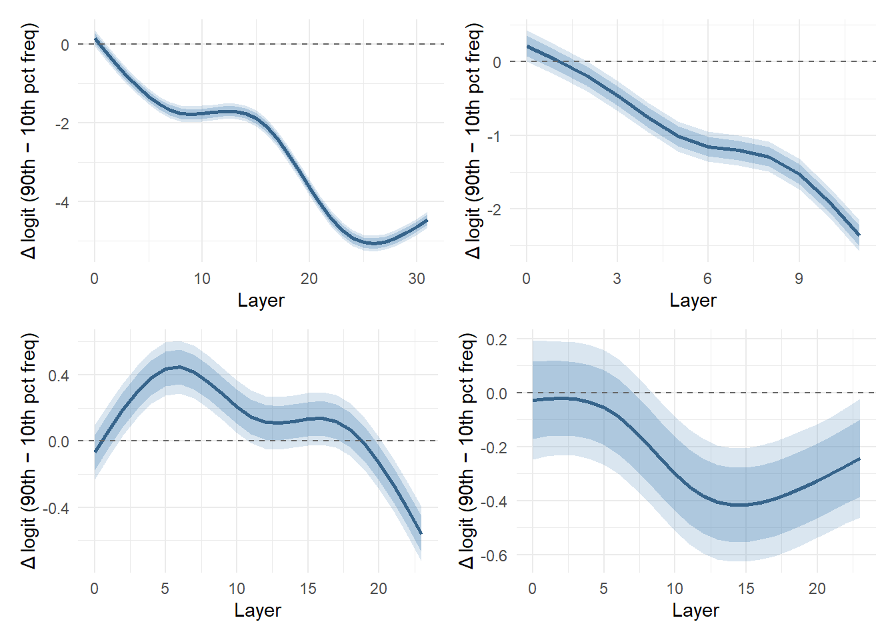
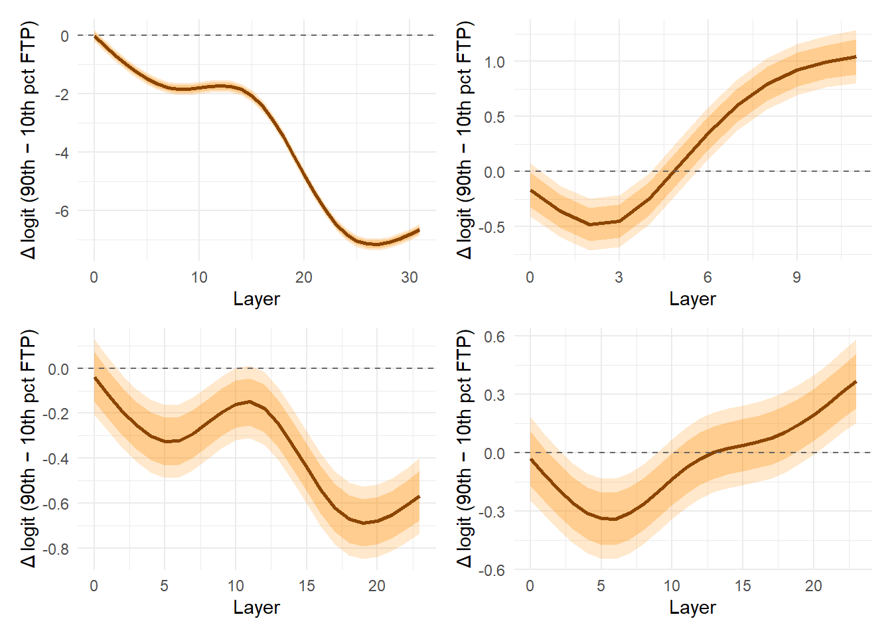
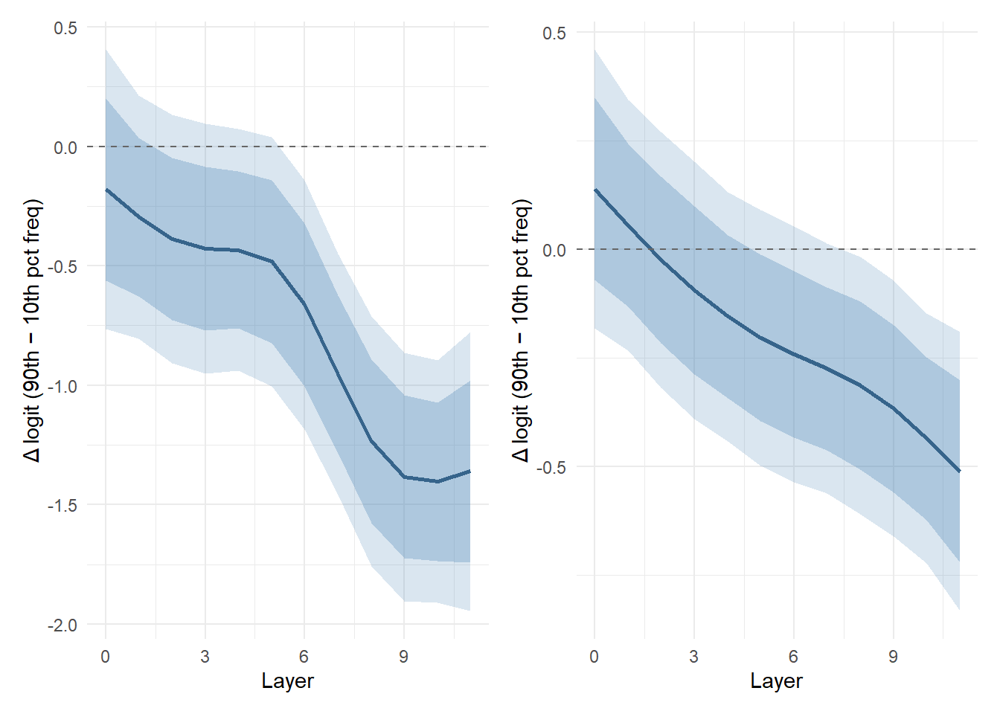
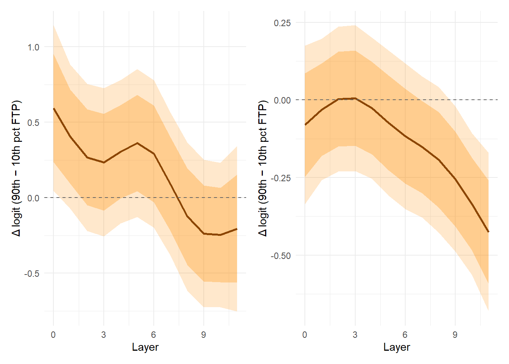

| Model | Parameter | Estimate | Est.Error | Q2.5 | Q97.5 | % > 0 |
|---|---|---|---|---|---|---|
| OLMo-3 7B | Intercept | 18.642 | 0.011 | 18.621 | 18.665 | 100.0 |
| OLMo-3 7B | c_log_freq | -0.199 | 0.013 | -0.225 | -0.174 | 0.0 |
| OLMo-3 7B | c_log_ftp | -0.074 | 0.012 | -0.097 | -0.051 | 0.0 |
| OLMo-3 7B | c_log_freq:c_log_ftp | -0.078 | 0.012 | -0.101 | -0.054 | 0.0 |
| BabyLM 125M | Intercept | 10.876 | 0.012 | 10.853 | 10.899 | 100.0 |
| BabyLM 125M | c_log_freq | 0.023 | 0.012 | 0.000 | 0.045 | 97.6 |
| BabyLM 125M | c_log_ftp | -0.052 | 0.012 | -0.074 | -0.029 | 0.0 |
| BabyLM 125M | c_log_freq:c_log_ftp | -0.012 | 0.012 | -0.036 | 0.011 | 14.8 |
| BabyLM 350M | Intercept | 13.301 | 0.007 | 13.288 | 13.315 | 100.0 |
| BabyLM 350M | c_log_freq | -0.043 | 0.007 | -0.056 | -0.029 | 0.0 |
| BabyLM 350M | c_log_ftp | 0.035 | 0.007 | 0.022 | 0.049 | 100.0 |
| BabyLM 350M | c_log_freq:c_log_ftp | -0.006 | 0.007 | -0.020 | 0.008 | 19.8 |
| BabyLM 1.3B | Intercept | 16.524 | 0.026 | 16.474 | 16.575 | 100.0 |
| BabyLM 1.3B | c_log_freq | 0.165 | 0.026 | 0.114 | 0.216 | 100.0 |
| BabyLM 1.3B | c_log_ftp | -0.089 | 0.026 | -0.140 | -0.037 | 0.0 |
| BabyLM 1.3B | c_log_freq:c_log_ftp | 0.048 | 0.028 | -0.005 | 0.102 | 96.3 |
writeup
Experiment 1: UP Independently
Joint model — first layer
Joint model — final layer
| Model | Parameter | Estimate | Est.Error | Q2.5 | Q97.5 | % > 0 |
|---|---|---|---|---|---|---|
| OLMo-3 7B | Intercept | 10.101 | 0.041 | 10.020 | 10.182 | 100.0 |
| OLMo-3 7B | c_log_freq | -0.482 | 0.046 | -0.572 | -0.393 | 0.0 |
| OLMo-3 7B | c_log_ftp | -1.520 | 0.041 | -1.602 | -1.440 | 0.0 |
| OLMo-3 7B | c_log_freq:c_log_ftp | 0.054 | 0.041 | -0.026 | 0.135 | 90.4 |
| BabyLM 125M | Intercept | 8.119 | 0.036 | 8.045 | 8.189 | 100.0 |
| BabyLM 125M | c_log_freq | -0.296 | 0.036 | -0.368 | -0.225 | 0.0 |
| BabyLM 125M | c_log_ftp | -0.212 | 0.037 | -0.286 | -0.139 | 0.0 |
| BabyLM 125M | c_log_freq:c_log_ftp | -0.054 | 0.039 | -0.129 | 0.022 | 8.1 |
| BabyLM 350M | Intercept | 8.679 | 0.038 | 8.605 | 8.752 | 100.0 |
| BabyLM 350M | c_log_freq | -0.355 | 0.037 | -0.429 | -0.284 | 0.0 |
| BabyLM 350M | c_log_ftp | 0.042 | 0.038 | -0.033 | 0.118 | 86.5 |
| BabyLM 350M | c_log_freq:c_log_ftp | -0.112 | 0.039 | -0.188 | -0.036 | 0.2 |
| BabyLM 1.3B | Intercept | 8.034 | 0.048 | 7.942 | 8.128 | 100.0 |
| BabyLM 1.3B | c_log_freq | -0.181 | 0.046 | -0.270 | -0.091 | 0.0 |
| BabyLM 1.3B | c_log_ftp | -0.115 | 0.046 | -0.205 | -0.023 | 0.7 |
| BabyLM 1.3B | c_log_freq:c_log_ftp | -0.057 | 0.049 | -0.153 | 0.039 | 12.4 |
Frequency effect across layers

FTP effect across layers

Experiment 2: UP as Subword
Joint model — first layer
| Model | Parameter | Estimate | Est.Error | Q2.5 | Q97.5 | % > 0 |
|---|---|---|---|---|---|---|
| OLMo-3 7B | Intercept | 10.211 | 0.006 | 10.199 | 10.223 | 100.0 |
| OLMo-3 7B | c_log_freq | -0.047 | 0.007 | -0.061 | -0.034 | 0.0 |
| OLMo-3 7B | c_log_ftp | -0.047 | 0.006 | -0.059 | -0.035 | 0.0 |
| OLMo-3 7B | c_log_freq:c_log_ftp | -0.022 | 0.006 | -0.035 | -0.010 | 0.0 |
| BabyLM 125M | Intercept | 12.097 | 0.024 | 12.051 | 12.143 | 100.0 |
| BabyLM 125M | c_log_freq | 0.040 | 0.024 | -0.008 | 0.087 | 95.1 |
| BabyLM 125M | c_log_ftp | -0.070 | 0.024 | -0.118 | -0.023 | 0.1 |
| BabyLM 125M | c_log_freq:c_log_ftp | -0.026 | 0.025 | -0.075 | 0.023 | 15.4 |
| BabyLM 350M | Intercept | 13.881 | 0.013 | 13.856 | 13.907 | 100.0 |
| BabyLM 350M | c_log_freq | -0.034 | 0.013 | -0.060 | -0.009 | 0.5 |
| BabyLM 350M | c_log_ftp | -0.010 | 0.013 | -0.034 | 0.016 | 22.9 |
| BabyLM 350M | c_log_freq:c_log_ftp | -0.002 | 0.013 | -0.029 | 0.024 | 43.1 |
| BabyLM 1.3B | Intercept | 15.260 | 0.026 | 15.208 | 15.312 | 100.0 |
| BabyLM 1.3B | c_log_freq | 0.012 | 0.027 | -0.040 | 0.064 | 66.9 |
| BabyLM 1.3B | c_log_ftp | -0.009 | 0.027 | -0.061 | 0.043 | 37.4 |
| BabyLM 1.3B | c_log_freq:c_log_ftp | -0.023 | 0.028 | -0.079 | 0.031 | 20.5 |
Joint model — final layer
| Model | Parameter | Estimate | Est.Error | Q2.5 | Q97.5 | % > 0 |
|---|---|---|---|---|---|---|
| OLMo-3 7B | Intercept | 13.290 | 0.049 | 13.195 | 13.386 | 100.0 |
| OLMo-3 7B | c_log_freq | -0.565 | 0.054 | -0.670 | -0.459 | 0.0 |
| OLMo-3 7B | c_log_ftp | -1.666 | 0.049 | -1.763 | -1.569 | 0.0 |
| OLMo-3 7B | c_log_freq:c_log_ftp | -0.060 | 0.049 | -0.158 | 0.036 | 11.1 |
| BabyLM 125M | Intercept | 11.958 | 0.070 | 11.819 | 12.095 | 100.0 |
| BabyLM 125M | c_log_freq | -0.827 | 0.069 | -0.961 | -0.695 | 0.0 |
| BabyLM 125M | c_log_ftp | 0.211 | 0.069 | 0.077 | 0.348 | 99.9 |
| BabyLM 125M | c_log_freq:c_log_ftp | -0.153 | 0.073 | -0.298 | -0.007 | 2.0 |
| BabyLM 350M | Intercept | 10.944 | 0.074 | 10.795 | 11.091 | 100.0 |
| BabyLM 350M | c_log_freq | -0.262 | 0.074 | -0.404 | -0.117 | 0.0 |
| BabyLM 350M | c_log_ftp | -0.353 | 0.074 | -0.496 | -0.208 | 0.0 |
| BabyLM 350M | c_log_freq:c_log_ftp | -0.117 | 0.076 | -0.267 | 0.030 | 6.5 |
| BabyLM 1.3B | Intercept | 10.233 | 0.052 | 10.130 | 10.334 | 100.0 |
| BabyLM 1.3B | c_log_freq | -0.170 | 0.053 | -0.274 | -0.068 | 0.0 |
| BabyLM 1.3B | c_log_ftp | 0.068 | 0.052 | -0.037 | 0.170 | 90.1 |
| BabyLM 1.3B | c_log_freq:c_log_ftp | 0.055 | 0.054 | -0.053 | 0.160 | 84.0 |
Frequency effect across layers

FTP effect across layers

Experiment 3: Whisper (ASR Model)
Joint model — first layer
| Model | Parameter | Estimate | Est.Error | Q2.5 | Q97.5 | % > 0 |
|---|---|---|---|---|---|---|
| Encoder | Intercept | 12.593 | 0.170 | 12.263 | 12.931 | 100.0 |
| Encoder | c_log_freq | -0.169 | 0.170 | -0.501 | 0.163 | 15.8 |
| Encoder | c_log_ftp | 0.341 | 0.173 | 0.001 | 0.684 | 97.6 |
| Encoder | c_log_freq:c_log_ftp | 0.185 | 0.138 | -0.085 | 0.452 | 91.0 |
| Decoder | Intercept | 7.485 | 0.048 | 7.392 | 7.580 | 100.0 |
| Decoder | c_log_freq | 0.054 | 0.047 | -0.038 | 0.146 | 87.8 |
| Decoder | c_log_ftp | -0.046 | 0.047 | -0.137 | 0.048 | 16.6 |
| Decoder | c_log_freq:c_log_ftp | 0.009 | 0.039 | -0.067 | 0.084 | 59.1 |
Joint model — final layer
| Model | Parameter | Estimate | Est.Error | Q2.5 | Q97.5 | % > 0 |
|---|---|---|---|---|---|---|
| Encoder | Intercept | 10.939 | 0.109 | 10.727 | 11.157 | 100.0 |
| Encoder | c_log_freq | -0.527 | 0.108 | -0.739 | -0.314 | 0.0 |
| Encoder | c_log_ftp | 0.154 | 0.110 | -0.061 | 0.367 | 92.0 |
| Encoder | c_log_freq:c_log_ftp | 0.025 | 0.088 | -0.149 | 0.196 | 61.3 |
| Decoder | Intercept | 9.014 | 0.108 | 8.800 | 9.225 | 100.0 |
| Decoder | c_log_freq | -0.155 | 0.107 | -0.364 | 0.059 | 7.5 |
| Decoder | c_log_ftp | -0.123 | 0.108 | -0.335 | 0.089 | 12.5 |
| Decoder | c_log_freq:c_log_ftp | 0.122 | 0.086 | -0.048 | 0.287 | 92.2 |
Frequency effect across layers

FTP effect across layers
